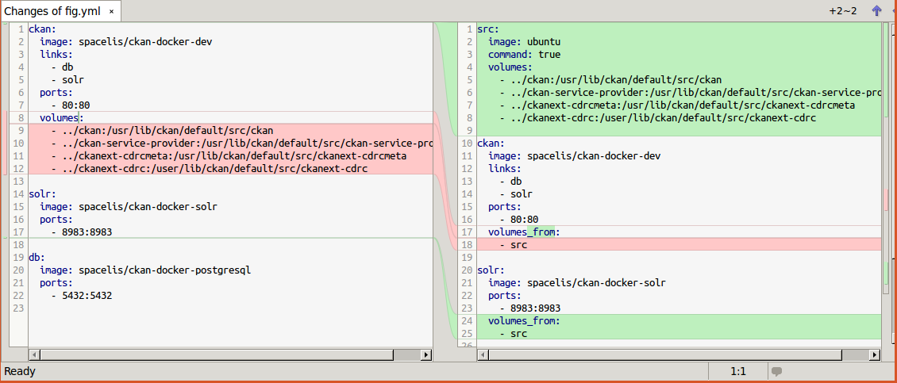
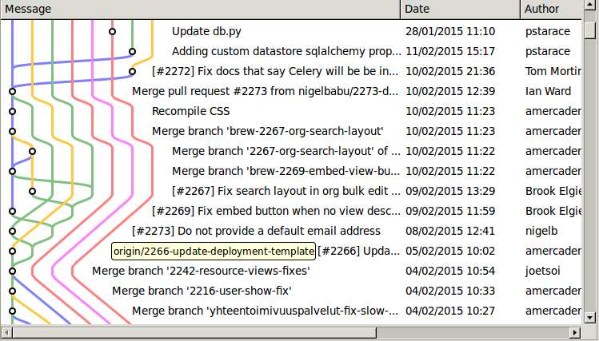

Git(hub) In A Nutshell
A crash course on how to use git/github
Created by Wen Li / wen.li@ucl.ac.uk
Concepts
Working Directory: The directory where the normal files are stored
Commit: A snapshot of changes made between two versions
Branch: A sequence of commits representing editing history
Repository: A place (directory) where branches live
Commit
Basically can be imagined as a diff file containing changes in multiple files
Branch
A series commits that may branch out and be merge with the others.
Repository (repo)
A place where all branches live, which is named .git
Basic operations
git initCreate a repo with in the project root directorygit checkout -b <branch>Create a new branch starting from the latest commit (branch out)git add .Add changes to staging area, i.e., create a snapshot of the changes you have madegit commit -m "your commit message"Commit the staged changes to repogit tag <name>Mark a commit with a namegit checkout <branch>Check out another branch

Working with Remote Repo
Remote repo is just another .git directory locate somewhere else.
git clone <URL> Create a local mirror of the remote repogit remote add <name> <URL> Add a reference to a remote repogit push <name> <branch> Upload (synchronize) current branch to remote repogit pull <name> <branch> Upload (synchronize) current branch to remote repo
Summary

When something happened
git logViewing the history of current branchgit checkout <ref>Update the working directory to the states of a branch/tag/commitgit revert <ref>Create a new commit to revert the changes made sincerefgit checkout -b <new branch>Create a new branch from current pointgit merge <branch>Merge the changes from another branch
What is Github?

- It is online platform holding repositories
- It is a project management platform for
- hosting documents
- communicating bugs and features
- profiling the work load
- You can even setup static website on it
A demo in SmartGit (Github)
Why SmartGit?
- Full featured GUI
- Standalone: supporting various work flow/style
- Cross platform: available on Windows, Linux, Mac OS
Scene 1
Creating a git repository
- Create a new local repo
git init - Create a local mirroring repo from a remote repo
git clone <URL> <dir> - Create a new remote repo
- Create a new remote mirroring repo from another remote repo
Scene 1-1
Creating a local repository
Scene 1-2
Clone a remote repo to local
Scene 1-3
Creating a repository on Github
Scene 1-4
Creating a repo on Github from another repo
Scene 2
Managing Commits
- Staging the difference:
git add <filepath> - Create a commit in the repo
git commit -m "<description>" - Create a new branch
git checkout -b <branch> - Tag a commit
git tag <name>
Scene 2-1
Commit to a repository
Scene 2-2
Create a new branch
Scene 2-3
Create a new tag
Scene 3
Synchronizing repository
- Pull (download) from the upstream:
git pull - Push (upload) to the upstream:
git push

Scene 3-1
Synchronizing repository (Pull)
Scene 3-2
Synchronizing repository (Push)
Scene 4
Oops!
- View editing history (log)
- Abandon uncommitted changes
git checkout -- <filepath> - Abandon last commits:
git revert - Resolve merge conflicts
Scene 4-1
View log
Scene 4-2
Abandon uncommitted changes
Scene 4-2
Abandon last commits
Scene 4-4
Merge / Conflict
Scene 5
Management and collaboration on Github
- Issue management
- Direct Editing
- Pull request
- Deleting a repository (project)
Scene 5-1
Issue Management
Scene 5-2
Editing a file on Github
Scene 5-3
Pull Request
Scene 5-3
Pull Request Accepting
Scene 5-4
Delete a repository on Github
Day to Day Routine
- Always pull before push to make sure the changes in the remote branch integrates with your new changes
- Resolve conflicts
- Test integrity
- Keep remote master consistent all the time
- Open issues to document the discussions of problems and decision making processes for later reference
Learning resources
- https://www.atlassian.com/git/
- https://help.github.com/
- Cheat Sheet with some nice guidelines of using a VCS
- StackOverflow.com / Google
- Wen Li
Debates
- Merge vs Rebase
- Pull vs Fetch then Merge/Rebase
- Revert vs Reset
Debates
- Merge vs Rebase
- Pull vs Fetch then Merger/Rebase
- Revert vs Reset
Git commit -m
"The end"
Thanks & Questions